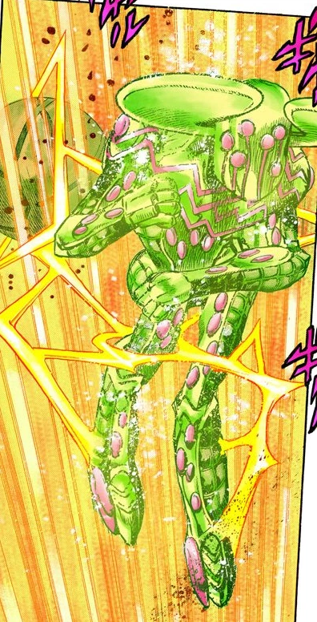

Infinite Rotation Tusk ACT4 embodies the infinite energy and rotation of the Golden Spin and is able to deploy it in various ways. Following the principle of the Golden Spin, the energy wielded and embodied by Tusk ACT4 is infinite, allowing a wide array of otherwise impossible feats. One of the first abilities displayed by Tusk ACT4 is to be able to break through the dimensional barrier of Love Train and enter the space in which Valentine hides